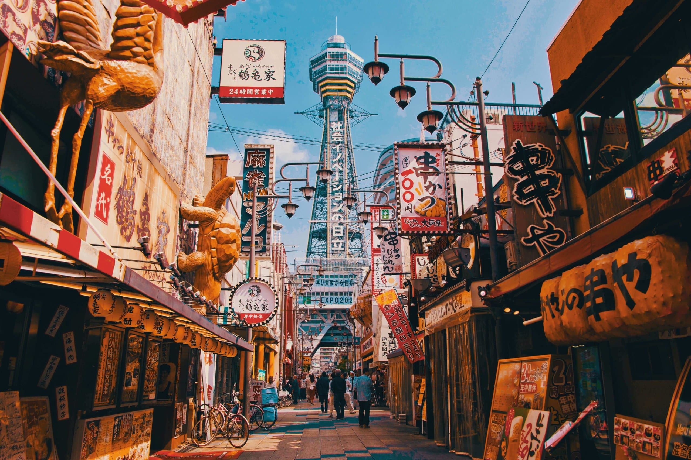
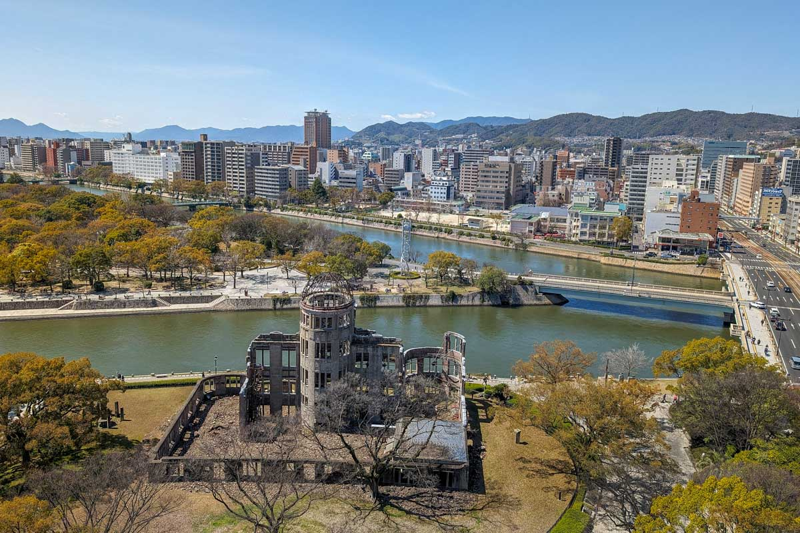
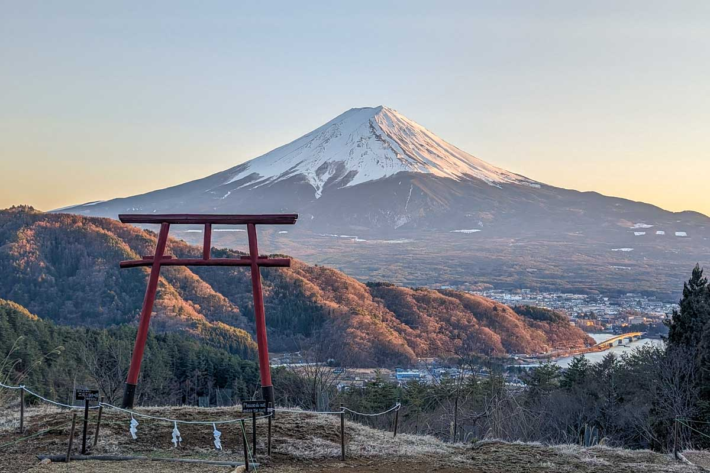

- My Dream Trip

Welcome to my wishlist of places that I want to visit in Japan!

Tokyo is the capital of Japan and a bustling metropolis known for its vibrant culture, cutting-edge technology, and delicious cuisine.
Learn More
Osaka is a vibrant city known for its lively atmosphere, delicious street food, and rich cultural heritage.
Learn More
Hiroshima is a city with a rich history and a symbol of peace, known for its memorials and museums dedicated to the events of World War II.
Learn More
Mount Fuji is an iconic symbol of Japan, known for its majestic beauty and is a popular destination for hiking and sightseeing.
Learn More